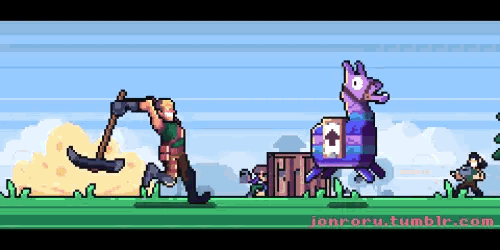
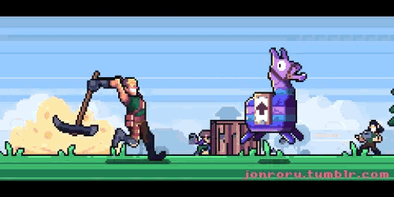
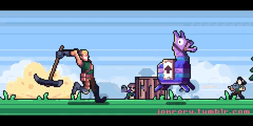

Distrações
 



No vídeo de hoje, vocês vão ver os 49º highlights do Fortnite do MariusCOW, um vídeo de montagem do Fortnite na Temporada 5 do Capítulo 5 (Remix do Capítulo 2)! Neste gameplay, mostrei meu CONTROLE INSANO de peças e edições/mecânicas rápidas. Espero que vocês curtam esse gameplay do Fortnite da Temporada 5 do Capítulo 5.
